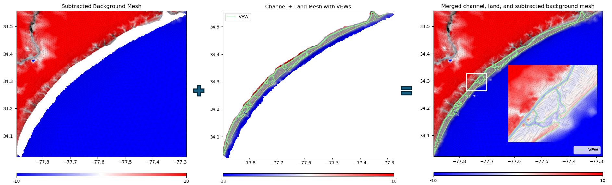
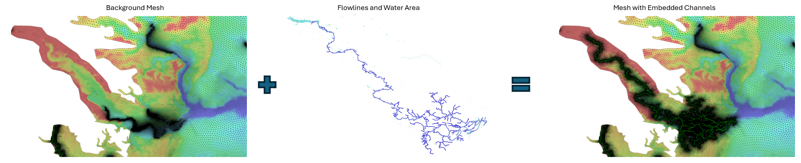
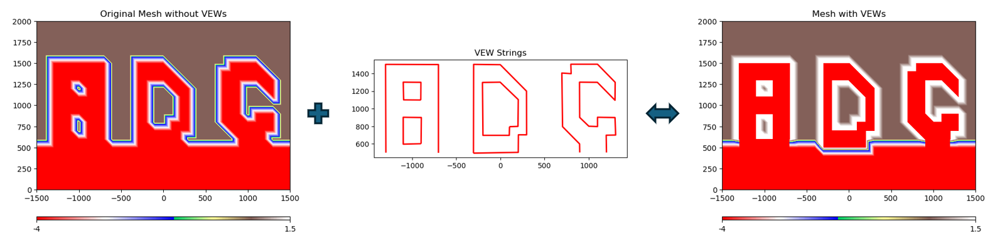

Examples
This section provides examples of how to use ADCIRC Utils based on real-world use cases.
Channel Mesh Merging
This example demonstrates the process of merging multiple meshes (channel, land, and background) while handling Vertical Element Wall (VEW). The workflow includes:
Combining channel and land meshes with VEWs
Subtracting channel+land coverage from background mesh
Merging all components into a final mesh
Adjusting VEW channel elevations and barrier heights
Transferring nodal attributes and updating Manning’s n values
You can find the complete example in the examples/channelmerging/example.ipynb notebook.
Channel Mesh Paving
This example demonstrates the channel paving process using tools in adcircutils/channelpaving. It provides a sample setup to showcase how to model and pave a channel in a background mesh for ADCIRC simulations. The example includes:
Adding depth and width attributes to channel centerlines
Creating a channel mesh and embedding it into a background mesh
Visualizing the results using MATLAB Live Scripts
You can find the complete example in the examples/channelpaving/ directory.
VEW Processing
This example demonstrates the complete workflow for processing Vertical Element Wall (VEW) in ADCIRC meshes using the adcircutils.vewprocessing module. The process includes:
Converting VEW polylines to node strings
Adding VEWs to the mesh
Scraping VEWs from the mesh
Managing bank elevations and Manning’s n values for VEW nodes
You can find the complete example in the examples/vewprocessing/example.ipynb notebook.
References
Bunya, S., et al. (2023). Techniques to embed channels in finite element shallow water equation models. Advances in Engineering Software, 103516. https://doi.org/10.1016/j.advengsoft.2023.103516